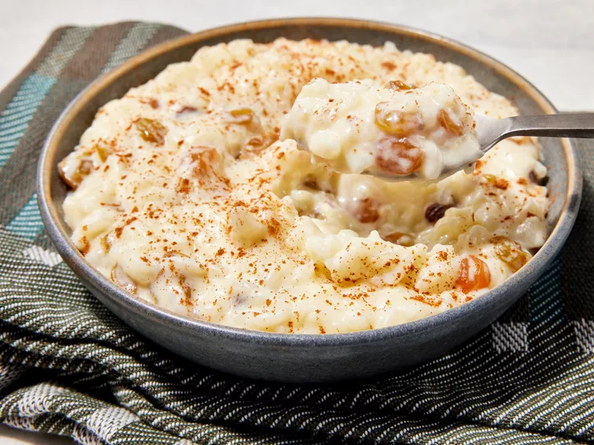

Creamy Rice Pudding

Description
Rice pudding is a creamy mixture of rice and milk that is cooked until it's thick and soft. It can be sweet or savory. This raisin-studded dessert rice pudding is thickened with an egg, sweetened with sugar, and enhanced with vanilla.
Ingredients
- 1 cup long-grain white rice
- 2 cups whole milk
- 1/2 cup granulated sugar
- 1/4 teaspoon salt
- 1 teaspoon vanilla extract
- 1/2 cup raisins (optional)
- 1 large egg
- Cinnamon for garnish (optional)
Steps
- Rinse the rice under cold water until the water runs clear.
- In a medium saucepan, combine the rice, milk, sugar, and salt. Bring to a boil over medium heat.
- Reduce the heat to low and simmer, stirring frequently, until the rice is tender and the mixture is thickened, about 25-30 minutes.
- In a small bowl, beat the egg. Gradually stir in a few tablespoons of the hot rice mixture to temper the egg.
- Slowly add the tempered egg back into the saucepan, stirring constantly. Cook for an additional 2-3 minutes until thickened.
- Remove from heat and stir in the vanilla extract and raisins (if using).
- Let the pudding cool slightly before serving. Garnish with cinnamon if desired.